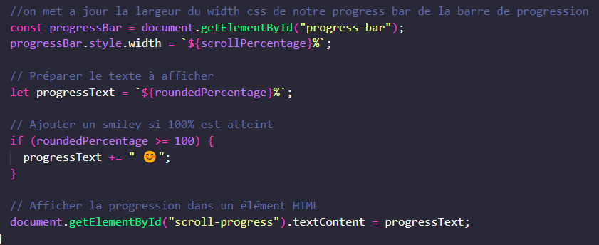

Froggiesplaining :
Ce script fonctionne de la manière suivante :
d'abord on ajoute les éléments HTML et CSS necessaires à la scrollbar colorée
puis on ajoute les lignes de javascript suivantes :

pour agir sur la "width" CSS en % de la scrollbar + ajouter le smiley avec une condition "if 100%".